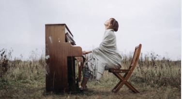
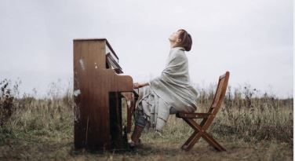

Scorrendo tra le seguenti pagine avrete modo di scoprire quali sono stati i miei percorsi. Diplomato Liceo Scientifico. Frequentazione di corsi con annesse certificazioni. Ed esperienze lavorative.
CERTIFICAZIONE INGLESE B2. ✓
Il mio percorso lavorativo ha avuto inizio nel settore della Ristorazione. Maggior esperienza acquisita come profilo da camerire di sala. Per un breve periodo come pizzaiolo.
Sono un ragazzo sportivo, in particolar modo ho praticato calcio a livello agonistico (disputando competizioni regionali). Ho praticato Pugilato per circa 1 anno.
Sono un appassionato di buona musica e della lettura. Ho un gran interesse per l'arte e la natura.
 

Partecipazione al cortometraggio realizzato per sostenere un progetto di beneficenza promosso dall'associazione Agebeo e Amici di Vincenzo Onlus.

Il tutto vi offre una panoramica di quella che è la mia preparazione didattica e le mie esperienze professionali, le quali contribuiranno a dare forma alla mia persona ed il mio temperamento.
"Non occorre arrivare in cima per goderci la vita e non serve essere alla continua ricerca di montagne da scalare e di cime da raggiungere, ogni tanto possiamo anche farci una semplice passeggiata in pianure e goderci il rassicurante paesaggio del presente."
— Tratto dal libro "Quel che fu Bellavista" di
Simone Barbone